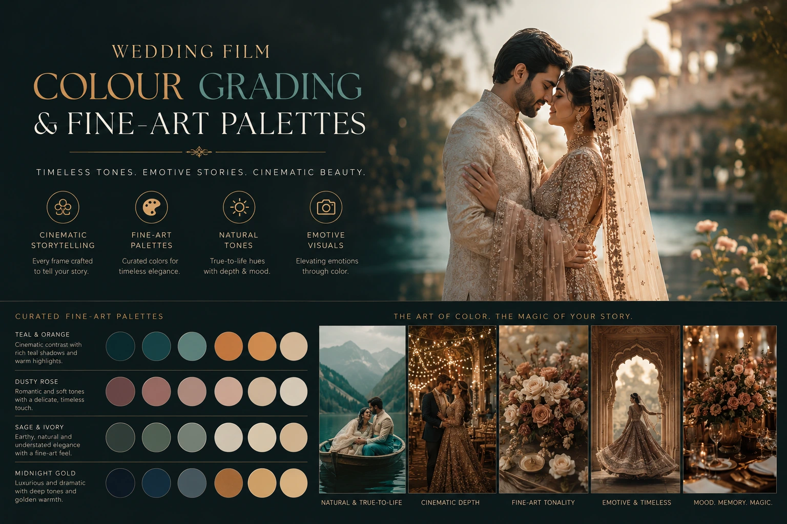
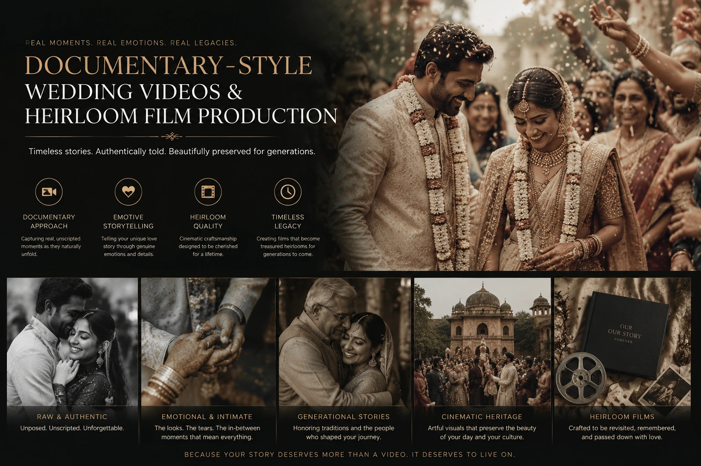

The Teal & Orange Myth: Designing a Timeless Color Palette for Premium Wedding Cinematography
The Colour Grade That Is Dating Every Wedding Film It Touches
Watch a wedding film produced between 2015 and 2022 and you will likely see the same visual treatment: shadows pushed toward an artificial blue-green, highlights and skin tones pushed toward an artificial warm orange, contrast cranked to create a punchy, high-energy look that was borrowed from Hollywood blockbusters and became, for a decade, the default aesthetic of aspirational wedding videography across India and globally.
This is teal and orange grading — and it is the single most reliably date-stamping visual choice a wedding filmmaker can make. A film graded in teal and orange does not look timeless. It looks like it was made during a specific era of aesthetic trend — the same way 1980s wedding films look like the 1980s, or 2000s wedding films look like the early 2000s. And for couples who want their wedding film to be something they can watch in thirty years and feel the same emotional truth they felt on the day, the teal and orange grade is a commitment to emotional obsolescence.
Premium wedding cinematography requires a different and more considered approach to colour — one grounded in the specific visual qualities of timelessness rather than the specific visual qualities of trend. This guide explains what that approach looks like technically and why it matters for couples commissioning cinematic wedding videos and luxury marriage film production that is built to last.
Why Teal and Orange Became the Default — and Why It Is Now the Wrong Choice
Teal and orange grading achieved its dominance through a specific mechanism: it looks impressive on a first viewing. The punchy contrast, the rich saturation, the warm skin tones against cool shadows — these are visually striking qualities that communicate cinematic production value on a social media feed where the competition is raw, ungraded phone footage. In the short-form competitive context of Instagram and YouTube, teal and orange grading made wedding films stand out from 2010 through approximately 2020.
The problem is that it made them stand out as a product of that era — not as a timeless record of a specific day. And as the trend has peaked and begun to recede, the visual signature of teal and orange grading has become not a marker of quality but a marker of period — the same way that heavy vignetting, lens flare overlays, and cross-processed colour are now immediately readable as aesthetic choices of specific past eras.
For cinematic wedding videos intended to function as timeless heirloom videos — films that couples will watch on their tenth anniversary, their twentieth, their thirtieth — the teal and orange grade is the wrong choice. Not because it looked bad in 2018, but because it will look wrong in 2035. And a wedding film that looks wrong in 2035 has failed at its most important commercial promise: to preserve the emotional truth of a day in a form that remains beautiful and affecting across decades.
The Skin Tone Problem
Teal and orange grading systematically pushes all skin tones toward orange — which misrepresents the full range of South Asian complexions that appear in an Indian wedding film. Accurate, beautiful skin tone rendering across dark, medium, and light complexions requires a grading approach that does not impose a uniform colour direction on the most emotionally important element of the frame.
The Fabric Colour Problem
Indian wedding textiles — Kanjivaram silk reds, peacock blue lehengas, emerald green sarees — are selected for their specific colour. Teal and orange grading shifts every colour in the image toward the same poles: the reds go more orange, the cool tones go more teal. The specific colours the bride chose and the family wore are no longer the colours the film records.
The Trend Aging Problem
Every aesthetic trend has a peak and a decay. The couples who watch their teal and orange graded wedding film in 2030 will see — more clearly than they can now — that the visual aesthetic is dated. The emotional content of the film is unchanged; the visual treatment places it firmly in a specific era. Timeless grading does not produce this effect.
The Heirloom Value Problem
A luxury marriage film production is not primarily a social media asset — it is a family document intended to be passed to the next generation. A film that reads as visually dated within a decade has significantly diminished heirloom value compared to one whose colour grading will remain beautiful and emotionally true for the full span of a family's life.

What Timeless Colour Grading Actually Looks Like
Timeless wedding film colour grading does not have a specific visual signature in the way that teal and orange does. Its defining characteristic is the apparent absence of a visual signature — it looks like what was actually there, rendered with extraordinary quality and care, rather than what a colour trend suggested the footage should look like.
The specific technical characteristics of timeless wedding film colour grading:
- Accurate skin tone rendering across the full South Asian complexion range. An Indian wedding film features subjects across the full range of South Asian skin tones — from very fair to very deep — and the grade must render each tone accurately and beautifully. This requires skin tone selective colour adjustment: individual hue, saturation, and luminance adjustments specifically targeting the skin tone range of each scene, rather than a global colour push that affects all skin tones identically. The specific challenge for Indian weddings is that the warm light of outdoor golden hour mandap ceremonies and the mixed light of indoor reception halls require completely different skin tone calibrations — applied scene by scene, not film-wide.
- Natural highlight rolloff that preserves white fabric detail. Indian bridal wear — white and cream lehengas, heavily embellished sarees, embroidered sherwanis — is one of the most technically demanding subjects in wedding colour grading. Teal and orange grading, with its high contrast approach, routinely clips the highlights of white fabric, destroying the detail of embroidery and embellishment in the bridal costume's brightest areas. Timeless grading uses a gentle, extended highlight rolloff that preserves the full detail range of white fabric across the entire range from texture to specular highlight.
- Shadow density that creates depth without losing ritual detail. Indian wedding ceremonies take place in a wide range of lighting environments — the deep shade of a covered mandap, the mixed light of a temple interior, the candlelit darkness of a late-night reception. Timeless grading preserves the detail and emotional information in the shadow areas of these environments rather than crushing blacks for contrast effect. A ritual moment captured in the shadow of a mandap must remain legible — the hands, the expressions, the sacred objects — rather than disappearing into a dark contrast aesthetic.
- Colour temperature fidelity to the actual light of each scene. The warm golden light of a sunrise muhurtham ceremony, the neutral daylight of an outdoor reception, the warm incandescent light of a mandap decorated with tungsten strings — each has a specific colour temperature that communicates the time of day, the setting, and the emotional register of the moment. Timeless grading preserves these temperature differences rather than normalising all scenes to a single colour temperature. The variety of colour temperatures across a wedding day is part of its visual truth.
Cinematic Colour Lookup Tables (LUTs) for Indian Wedding Cinematography
Cinematic colour lookup tables (LUTs) are the colourist's starting point — a pre-built transformation that maps the flat, log-encoded footage from the camera to a viewable colour space and a directional aesthetic. The choice of LUT is consequential: it determines the baseline colour treatment that all subsequent adjustments are built upon, and a LUT that is not calibrated for the specific camera, the specific lighting conditions, and the specific skin tone range of Indian subjects produces a starting point that requires significant corrective work before the creative colour work can begin.
The principles that guide effective cinematic colour lookup tables (LUTs) selection and application for Indian wedding cinematography:
- Camera-specific technical LUTs as the starting point. The initial conversion from log footage to a viewable colour space should use the camera manufacturer's official technical LUT — the specific transform designed for that camera's log profile — rather than a generic or creative LUT applied directly to log footage. This ensures accurate colour rendition as the baseline before any creative grade is applied.
- Skin tone range validation before LUT selection. Any creative LUT applied to Indian wedding footage should be validated against the specific skin tone range present in the film before committing to it as the grade direction. A LUT that renders deep South Asian skin tones beautifully may not render lighter tones as well; a LUT calibrated for lighter skin tones may push darker tones into an unnatural direction. Skin tone validation is the single most important quality check in Indian wedding film colour grading.
- LUT intensity at 60 to 70%, not 100%. The most common mistake in LUT-based colour grading is applying the LUT at full 100% intensity — which produces exactly the visual signature of the LUT's design rather than a subtly influenced version of the natural footage. Reducing LUT intensity to 60 to 70% preserves the directional aesthetic of the LUT while retaining the natural colour quality of the original footage — producing a look that feels refined rather than applied.
- Scene-by-scene secondary adjustment over the LUT. The LUT is the starting point, not the finishing point. Each scene in the film requires specific secondary adjustments — skin tone correction, highlight recovery, shadow detail, colour balance for the specific ambient light — that are applied over the LUT to produce a grade that is specifically calibrated for each scene rather than uniformly applied across the full film.
Fine-Art Wedding Palettes: The Reference Aesthetic for Timeless Films
The most useful reference frame for fine-art wedding palettes in premium wedding cinematography is not social media or current trend — it is the aesthetic of fine-art portrait photography and cinema verité documentary filmmaking. Both traditions share a commitment to colour accuracy, natural rendering, and the visual quality of authentic rather than stylised light — which are precisely the qualities that produce timeless heirloom videos.
Fine-art wedding palettes for Indian weddings draw from several specific aesthetic traditions:
Warm Natural Palette
- Preserves the warm golden quality of outdoor ceremony light
- Renders cream and ivory fabrics with accurate warmth rather than clinical white
- Communicates intimacy and richness without artificial orange push
- Best for: outdoor morning ceremonies, golden hour couple sequences, candlelit receptions
Neutral Documentary Palette
- Accurate colour temperature fidelity to the actual light of each scene
- Skin tones rendered at their natural colour without directional push
- Preserves the full visual diversity of a multi-event Indian wedding day
- Best for: mixed lighting environments, indoor ceremonies, multi-event coverage
Desaturated Film Palette
- Moderate desaturation that communicates timelessness and emotional weight
- Preserves colour relationships without high saturation that reads as trend
- Film grain texture that communicates the permanence of archival footage
- Best for: intimate moments, documentary sequences, heirloom highlight films

Documentary-Style Wedding Videos: Colour Grading as Ethical Practice
Documentary-style wedding videos approach colour grading as an ethical practice — a commitment to preserving the visual truth of what actually occurred rather than imposing a stylistic interpretation. This stance has practical commercial implications for Indian couples: a documentary-style grade preserves the specific colours of the bridal jewellery, the saree's actual shade, the flowers' exact tone, and the skin colours of everyone present in their actual form — rather than in the form that a stylistic grade has chosen for them.
For a Tamil Nadu wedding where the specific red of a Kanjivaram silk, the specific gold of temple jewellery, and the specific green of fresh jasmine garlands are emotionally significant choices — not aesthetic preferences to be overridden by a colour trend — documentary-style colour grading is not just aesthetically preferable. It is the approach that honours the specific visual choices the couple and their families made in planning and dressing for the day.
The documentary-style colour grading approach for Tamil Nadu and South Indian weddings:
- Separate colour calibration for each event. The mehendi morning has a different light quality and colour temperature from the ceremony afternoon. The reception hall has a different quality from the outdoor mandap. Documentary-style grading treats each event as a separate visual environment and calibrates accordingly — rather than applying a single consistent look across events that have fundamentally different visual characters.
- Preservation of the specific colour palette of the bridal look. Before colour grading begins, the colourist should reference the actual bridal look — the specific saree, the specific jewellery, the specific mehendi — and confirm that the grade preserves each of these colours accurately. This is a specific calibration step, not an afterthought.
- No uniform saturation push across the film. Different scenes within the same wedding film may benefit from different saturation levels — the outdoor ceremony in golden light may be naturally rich in saturation, while the indoor reception under mixed artificial light may require a saturation lift to compensate for the flat quality of the ambient source. Scene-specific saturation adjustment produces a more natural result than a uniform push applied to the full film.
What Couples Should Ask Their Professional Video Photographer About Colour
When evaluating a professional video photographer for wedding cinematography, couples who care about the long-term visual quality of their film should ask these specific colour-related questions before booking:
- Can I see an example of your colour grade on a Tamil Nadu or South Indian wedding specifically — not just your showreel? The showreel shows the best frames; a full Tamil wedding film shows how the grade handles the specific lighting environments, skin tones, and textile colours of the specific wedding context.
- Do you calibrate your grade for South Asian skin tones specifically, or do you apply a global LUT? A cinematographer who cannot answer this question specifically does not have a skin-tone-calibrated colour workflow.
- What is your approach to preserving the specific colour of the bridal saree and jewellery in the final grade? The answer reveals whether the cinematographer thinks of colour grading as a creative tool applied to footage or as a service obligation to the specific visual choices the couple made.
- How would you describe your colour aesthetic in terms of its longevity — will it look as good in fifteen years as it does now? A cinematographer who can articulate a thoughtful answer to this question is a cinematographer who thinks seriously about the heirloom quality of their work.
- Do you use scene-specific colour grading or a film-wide grade? Scene-specific grading is significantly more time-consuming and more expensive in post-production. It is also the approach that produces timeless results. The answer tells you both about the quality commitment and the post-production workflow.
Luxury Marriage Film Production: The Complete Colour Pipeline
Luxury marriage film production at the highest level treats colour as a discipline in its own right — not as a post-production step applied after editing is complete. The complete colour pipeline for a premium wedding film:
- Camera profile calibration before the shoot. The camera is calibrated to a specific colour profile — typically the manufacturer's log format — and the white balance is set for each lighting environment on the shoot day, not left on automatic. Auto white balance produces inconsistent colour temperature across scenes that requires corrective grading time in post. Manual white balance in each lighting environment reduces corrective grading time and produces a more consistent starting point for the creative grade.
- On-set reference capture for key colour elements. A ColourChecker Passport or equivalent colour reference target is photographed in each major lighting environment on the shoot day — ceremony, reception, getting-ready. These references allow the colourist to calibrate the grade against known colour values rather than subjective memory of what the colours looked like.
- Technical grade before creative grade. The post-production colour workflow begins with a technical grade — correcting for white balance inconsistencies, exposure variations, and camera log conversion — before any creative colour direction is applied. A creative grade applied to technically uncorrected footage produces unpredictable and inconsistent results.
- Scene-by-scene creative grade with skin tone priority. The creative grade is applied scene by scene, with skin tone accuracy as the primary quality check for each adjustment. Every creative colour decision is evaluated against its effect on the skin tones of the subjects — the most emotionally important element of the frame.
- Final review on a calibrated monitor. The final grade is reviewed on a colour-calibrated monitor — not on a laptop screen or a consumer television — to ensure that the colours being delivered match the colourist's intention rather than the uncalibrated rendering of a consumer display.
Conclusion
The teal and orange myth is the belief that cinematic quality in wedding film requires a specific, trend-driven colour treatment. It does not. Premium wedding cinematography requires wedding film colour grading that preserves the visual truth of the day — accurate skin tones, faithful colour representation of the bridal look, natural highlight and shadow rendering — and applies this quality with the craft and intentionality of a trained colourist working scene by scene, not a preset applied film-wide.
The cinematic wedding videos that will still be beautiful in thirty years are not the ones that looked most impressive on Instagram in the year they were produced. They are the ones that looked like the day — like the actual light of that morning, the actual colour of that saree, the actual expression on that face at that moment — rendered with the quiet excellence that fine-art wedding palettes and documentary-style wedding videos produce when colour grading serves the film rather than the trend.
At The PhD Ads, we produce luxury marriage film production with a colour approach built for longevity — scene-specific wedding film colour grading, South Asian skin-tone-calibrated cinematic colour lookup tables (LUTs), and fine-art wedding palettes designed to produce timeless heirloom videos that remain as beautiful in thirty years as they are the morning after the wedding.
Key Topics
Ready to Commission a Wedding Film Built to Last?
At The PhD Ads, we produce premium cinematic wedding videos with colour grading built for longevity — scene-specific grade, South Asian skin-tone calibration, and fine-art palettes designed to produce timeless heirloom films for couples across Madurai and Tamil Nadu.
Email: team@e2o.in